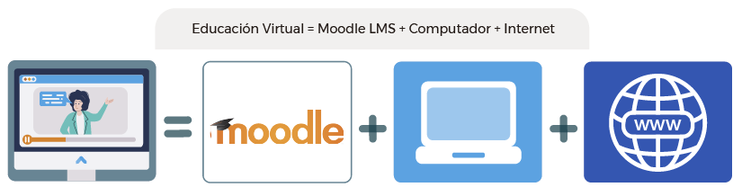
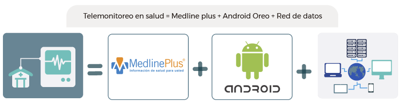
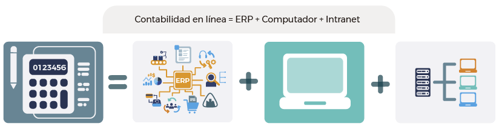
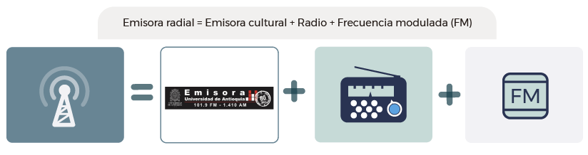
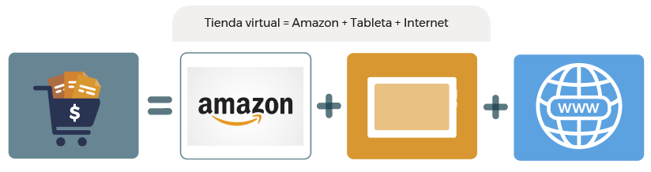
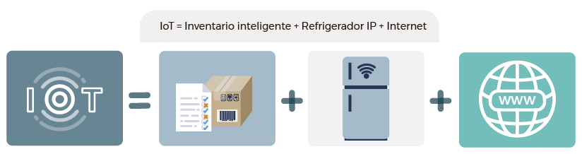

Para introducir el concepto de "tecnología" consideremos la siguiente descripción:
"La tecnología es el sistema de conocimientos y de información derivado de la investigación, de la experimentación o de la experiencia y que, unido a los métodos de producción, comercialización y gestión que le son propios, permite crear una forma reproducible o generar nuevos o mejorados productos, procesos o servicios".
En este sentido, los productos, procesos y servicios que se generan a partir de las tecnologías se enfocan en áreas específicas y permiten a las ingenierías emplearlas de acuerdo con su aplicación. Por eso, iniciaremos clasificando algunas tecnologías según el objetivo de su uso o el fin para el cual son desarrolladas.
Comencemos por entender un poco los tipos de tecnología más comunes en áreas relacionadas con la ingeniería. Realice una clasificación de la siguiente lista de tecnologías en las categorías que se han dispuesto, esto le ayudará a ir enmarcando los conceptos de aquellas tecnologías que son de principal interés en este módulo, es decir, las de la información y las de la comunicación.
Solamente las tecnologías que estén bien clasificadas podrán ser ubicadas en la casilla respectiva.
De información
Manufactura de productos
Energía
Agricultura, ecología y alimentación
Entretenimiento
Transporte
Comunicación
Existen entonces varios tipos de tecnologías que pueden tener aplicación o ser de interés para diferentes ingenierías. No obstante, dado el vasto universo de tecnologías que tienen aplicación en el campo, en este módulo nos concentraremos en aquellas que son transversales y aplicadas por los ingenieros independientemente de su área profesional, e incluso cualquiera sea la fase del proyecto que se esté desarrollando; estas son las tecnologías de la Información y la comunicación (TIC). Todas las ingenierías emplean tecnologías de la información, y a su vez requieren transmitir dicha información, empleando tecnologías de comunicación.
Por este motivo, y con el fin de delimitar un poco el alcance y profundidad que se verá en este módulo, abordaremos las TIC como la combinación de estas tecnologías.
A continuación, se presenta la definición de TIC desde varios puntos de vista, resaltando algunos de sus conceptos clave.
A continuación, encontrará unas definiciones con espacios en blanco. El objetivo es identificar la palabra apropiada que dé sentido a la definición del concepto, considerando que cada término es clave para entender aquello que se define. De la lista que aparece en cada espacio, seleccione la palabra que considere adecuada y valide la respuesta.
De acuerdo con la definición de TIC dada por el Gobierno de Colombia a través del Ministerio de Tecnologías de la Información y las Comunicaciones, entenderemos por TIC:
"Las Tecnologías de la Información y las Comunicaciones (TIC), son el conjunto de recursos, , equipos, programas informáticos, aplicaciones, redes y medios, que permiten la compilación, procesamiento, almacenamiento, de como voz,
, texto, video e imágenes."
Puede verse que en esta definición se contempla una gran cantidad de herramientas tecnológicas que son necesarias, o por lo menos útiles, para las labores del ingeniero en Colombia.
Desde otro punto de vista, según Valderrama (2017):
"La característica principal de las TIC es que es una de tecnologías que permiten tanto la representación y el procesamiento de la información en un medio como la de la misma con otras personas mediante el uso de . Es justamente esta posibilidad de almacenar y la información, lo que transformó muchas de las actividades y dio origen a la sociedad del conocimiento."
Ahora, revise la aplicación práctica de esta definición con la siguiente actividad:
A continuación, encontrará una lista de ecuaciones que debe completar para obtener el resultado apropiado. Observe cada uno de los conceptos y tome de la lista ubicada en la parte inferior aquel que considere apropiado para completar la ecuación correcta y obtener un producto o servicio moderno que combine tecnologías de la información con tecnologías de la comunicación. Preste mucha atención a las definiciones de los conceptos para que pueda identificar cuáles serían las combinaciones más pertinentes.
Otra forma de ver las TIC es mediante la suma de las tecnologías empleadas por nivel para permitir que sean una realidad. Serralde Romero (2010) propone tres categorías de tecnologías que soportan las TIC:
Redes
Se refieren a las tecnologías que permiten la transmisión de la información de una terminal a otra y usan el espectro electromagnético o redes cableadas para dicho fin.
Las TIC, propiamente dichas, están integradas por tecnologías en cada uno de estos niveles. En el siguiente infográfico se muestran, como ejemplo, algunos de los servicios definidos anteriormente mediante tecnologías en cada uno de los niveles mencionados.
- Educación Virtual
- 
- Telemonitoreo en salud
- 
- Contabilidad en línea
- 
- Emisora radial
- 
- Tienda virtual
- 
- IoT
- 
- Supervisión a distancia
-

Lo anterior no quiere decir que solamente se pueda usar una tecnología en cada nivel para obtener el servicio, de hecho, hay muchas tecnologías que pueden entrar a competir para solventar el servicio de otra manera; tal es el caso de las emisoras en internet y la contabilidad empresarial en la nube, entre otros. La mayoría de las veces los servicios tienden a converger sobre un nivel de red específico: el internet, y las terminales cada vez convergen más en los dispositivos móviles.
En adelante, se seguirá haciendo énfasis principalmente en el nivel de servicios, que es el que tiene una relación directa con el usuario final. Generalmente, el nivel de redes y terminales pueden ser vistos más como niveles de soporte que no se abordarán de manera específica, pero que son necesarios para garantizar la prestación de dichos servicios.
Considerando que las TIC se presentan de manera transversal para su utilización en las ingenierías, es importante identificar las características que las describen para conocer su importancia y uso potencial.
Identifique cuáles de las siguientes características son propias y definen las TIC:
A continuación, se presentará una serie de características. Si usted considera que se trata de una característica que define las TIC arrástrela hacia la izquierda; en caso contrario, hacia la derecha.
El uso continuo de las TIC es inminente en los procesos asociados a cualquier campo de la ingeniería y la importancia de su uso en el ejercicio profesional radica en que no solo satisface las necesidades, sino la solución de problemas y la mejora de procesos, siendo una tecnología esencial y transversal a todas las áreas.